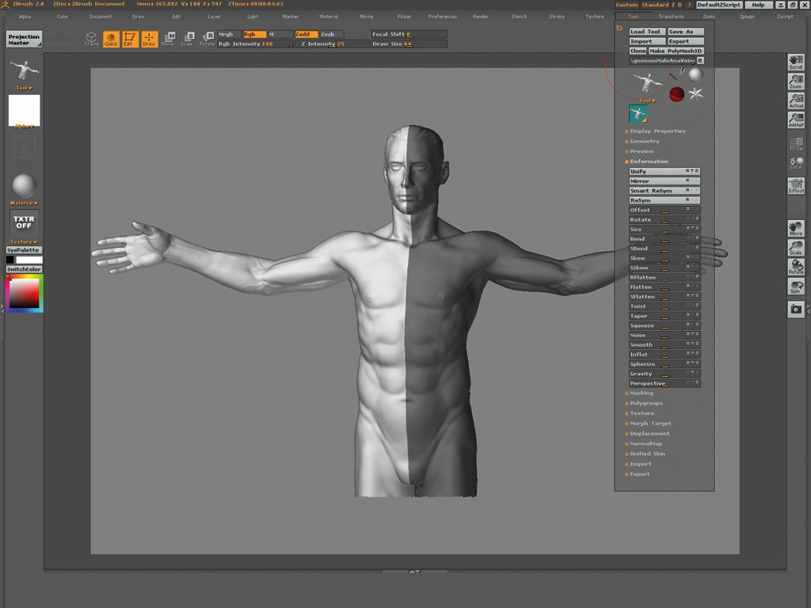

Sculpting Technology
The geometry used in digital sculpting programs to represent the model can vary; each offers different benefits and limitations. The majority of digital sculpting tools on the market use mesh-based geometry, in which an object is represented by an interconnected surface mesh of polygons that can be pushed and pulled around. This is somewhat similar to the physical process of beating copper plates to sculpt a scene in relief. Other digital sculpting tools use voxel-based geometry, in which the volume of the object is the basic element. Material can be added and removed, much like sculpting in clay. Still other tools make use of more than one basic geometry representation.
A benefit of mesh-based programs is that they support sculpting at multiple resolutions on a single model. Areas of the model that are finely detailed can have very small polygons while other areas can have larger polygons. In many mesh-based programs, the mesh can be edited at different levels of detail, and the changes at one level will propagate to higher and lower levels of model detail. A limitation of mesh-based sculpting is the fixed topology of the mesh; the specific arrangement of the polygons can limit the ways in which detail can be added or manipulated.
A benefit of voxel based sculpting is that voxels allow complete freedom over form. The topology of a model can be altered continually during the sculpting process as material is added and subtracted, which frees the sculptor from considering the layout of polygons on the model's surface. Voxels, however, are more limited in handling multiple levels of detail. Unlike mesh-based modeling, broad changes made to voxels at a low level of detail may completely destroy finer details.
Uses
It is used by auto manufacturers in their design of new cars. Sculpting can often introduce details to meshes that would otherwise have been difficult or impossible to create using traditional 3D modeling techniques. This makes it preferable for achieving photorealistic and hyperrealistic results, though, many stylized results are achieved as well. Sculpting is primarily used in high poly organic modeling (the creation of 3D models which consist mainly of curves or irregular surfaces, as opposed to hard surface modeling).[4] It can create the source meshes for low poly game models used in video games. In conjunction with other 3D modeling and texturing techniques and Displacement and Normal mapping, it can greatly enhance the appearance of game meshes often to the point of photorealism. Some sculpting programs like 3D-Coat, Zbrush, and Mudbox offer ways to integrate their workflows with traditional 3D modeling and rendering programs. Conversely, 3D modeling applications like 3ds Max and MODO are now incorporating sculpting capability as well, though these are usually less advanced than tools found in sculpting-specific applications. High poly sculpts are also extensively used in CG artwork for movies, industrial design, art, photorealistic illustrations, and for prototyping in 3D printing.
Sculpting Programs
There are a number of digital sculpting tools available. Some popular tools for creating are:
- Autodesk Alias
- 3D-Coat
- CB model pro
- Geomagic Freeform
- Geomagic Sculpt
- Mudbox
- Cinema 4D
- Sculptris
- SharpConstruct
- ZBrush
Traditional 3D modeling suites are also beginning to include sculpting capability. 3D modeling programs which currently feature some form of sculpting include the following:
- Softimage XSI
- Blender
- 3ds Max
- Bryce
- Cinema4D
- Form-Z
- Houdini
- Lightwave 3D
- Maya
- MODO
- Poser
- Silo
- Rhinoceros 3D
- SketchUp
- Strata 3D
- TrueSpace
See Also
- 2.5D
- 3D modeling
- 3D printing
- NURBS (Non-uniform rational B-spline)
- Polygonal modeling
- Polygon mesh
- Sketch-based modeling
- Subdivision surface
- Voxel
References
- Surface Design & Automotive Design
- Luxion Release KeyShot 6.3
- Autodesk & Alias
- Blender 3D: Noob to Pro/Organic Modeling
- Xah Lee "List of 3D Modeling Software"